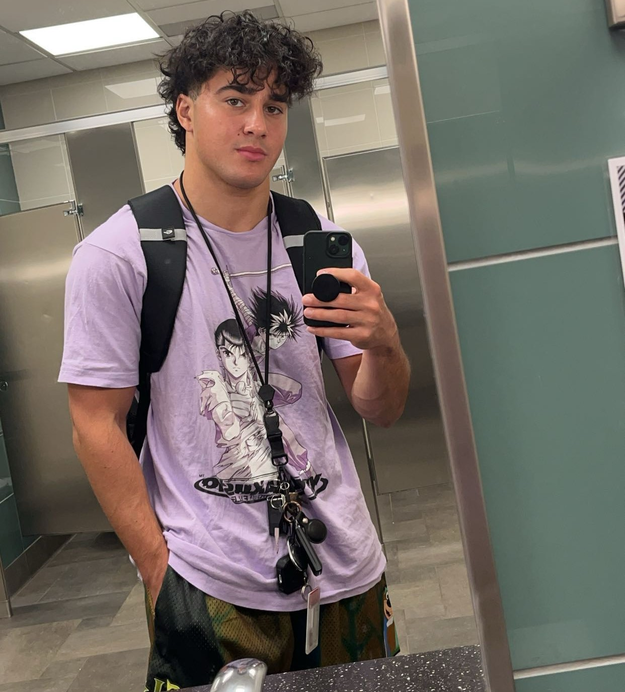
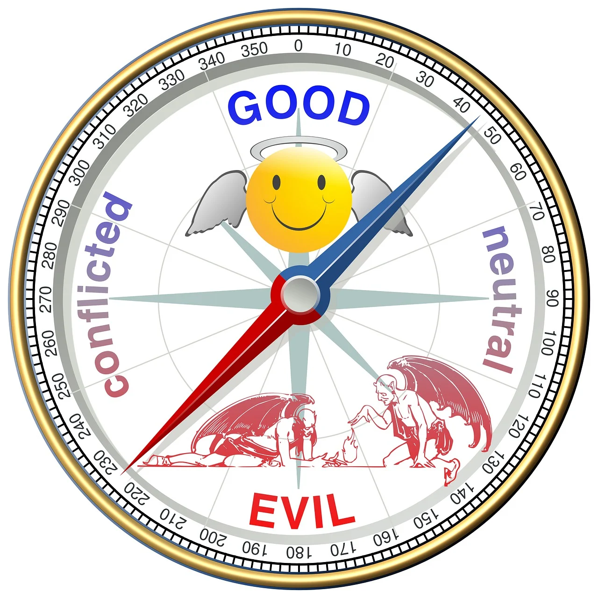
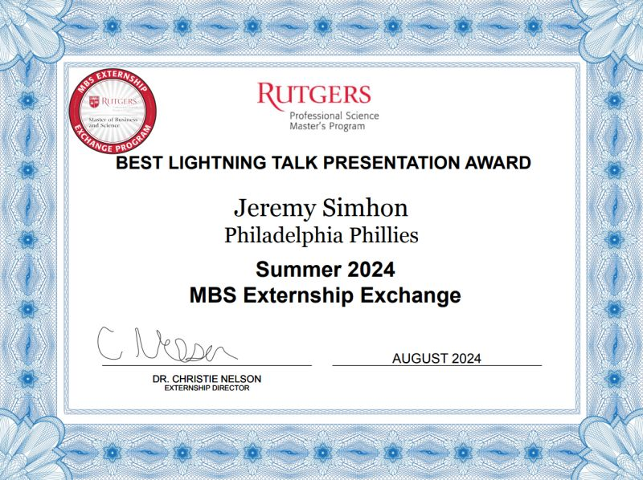

Jeremy Simhon
Who am I and what is my purpose and ambitions? Who do I seek to be? What do I have to offer?
Welcome
Welcome to my personal website! Here, you’ll find information about my projects, professional work, and personal hobbies. I hope you enjoy learning more about me and my journey!
About Me
Hello, my name is Jeremy Simhon and I am a student attending Rutgers University New Brunswick scheduled to graduate by May 2025 and hoping to find an entry level analyst job as well as hoping to get the most out of my senior year and my college experience as a whole before then.
Biography
Hello, my name is Jeremy Simhon and I am a senior at Rutgers University New Brunswick studying Business Analytics Information Technology and on a path to becoming a business analyst within the tech or retail industry. I am 21 years old and I live in Bergen County, NJ. Some things that I enjoy doing are biking, weightlifting, listening to music, stargazing, going to concerts, sports, boogie boarding, photography, cars, politics, philosophy, astronomy, Nintendo games especially Splatoon 3 which is my all-time favorite, and Chess I also find interesting. I am very much into fitness and I find pride in living a healthy lifestyle to feel the best that I possibly can and contribute to self-improvement.
Things I Want to Learn/Improve
Some things that I would like to work on are my time management skills, reliability, consistency and I also want to work more on self-control. Some skills that I would like to pick up are cooking, driving manual, and surfing. I also want to travel to more places with my girlfriend and venture outside of the state that I live in more. I would also like to watch more movies and TV shows since I usually am on social media so I don’t have a lot of exposure to cinema.
.jpg)
Goals/Aspirations
My most immediate goal right now is landing a full-time entry-level analyst position by the latest during the Summer time but I would like to preferably have a role lined up before I graduate in May. I hope to see myself in the next 5 years pursuing either Data Science or Data Analytics and trying to advance my career goals forward by either getting promoted or getting a raise. I would like to be well acquainted with the leaders of the company as well as my coworkers in order to foster a friendly work environment and make it easier for me to climb the ladder. I would hope that I am passionate about whatever work that I am doing and I would want for me to enjoy it, be happy and fulfilling, and at the same time receive an adequate salary for the work. I would also want to be moved-in with my girlfriend somewhere in New Jersey or potentially elsewhere depending on where our job sites are located. I want whatever I end up doing to be something that I am proud of and makes me feel accomplished to tell people about. I want it to be a career that allows me to bring my best skills to the forefront and lets me leverage my ability to connect with people and take a leadership role. I would want it to be a mutually beneficial exchange where I am bettering the company and the company is bettering me in the process, and I can feel a sense of belonging and purpose in my employment. I do the best when I ideally am a part of a supportive environment where people are not afraid to ask questions and where everyone’s strong suits are being fully taken advantage of.
Values
I am driven by a hard work ethic and a desire for success. I want to make a real-world impact with the work that I do in order to advance society forward. I strive to be the best version of myself and to better those around me. I never want to be known as someone who would back down from a challenge no matter how difficult or improbable it may seem to be. I also would like to be someone who is reliable and that you can count on for achieving a task. I am motivated by both my own passion as well as those around me who are rooting for my success such as my loved ones. I also promise to stay true to my moral compass when it comes to the corporate world and I pledge not to act wrongly even if it were for the benefit of my company, and even if I was receiving peer pressure from those around me to give in. I would resist the urge to act immorally because not only would I most likely get caught eventually whether it be from a whistleblower or from third party investigators, but it’s just wrong to do from an ethical perspective and it therefore is never warranted. It doesn’t matter to me even if I were the only person not complying, I would still stick to acting morally because it is the right thing to do and aligns most with my values as a human being.
Fun Facts
- My ethnicity is a mix of French and Egyptian, and my religion is Jewish.
- I have 2 sisters, both of which were/are a part of Rutgers, and I happen to be the middle child.
- I have a dog and a bird.
- I was born in New York City.
- My favorite food is hoisin chicken or steak.
- My favorite sauce on either is teriyaki.
Resume
Projects
Extern for Phillies via MBS Externship Exchange (May 2024 - August 2024)
I led an in-depth analysis of purchasing patterns across eight retail locations within the Phillies ballpark. My primary responsibility was to examine consumer buying behavior on a day-by-day basis, identifying trends and variations in purchasing activity. I focused on two key metrics: the ratio of total buyers to total stadium attendance and the proportion of buyers purchasing City Connect merchandise relative to overall retail sales. Leveraging these insights, I created meaningful visualizations to highlight trends and developed actionable recommendations aimed at helping the Phillies retail team optimize their marketing strategies and boost City Connect merchandise sales. My team was also awarded the best lightning talk presentation award for the final handoff presentation which was voted on amongst the other participants apart of the program who were told to agree to vote on who they thought delivered the best overall handoff presentation.
Student Data Analyst for Data Analytics Bootcamp via Upright Education (June 2024 - October 2024)
Led the development of a customer segmentation model for an automobile company, leveraging k-means clustering to identify distinct customer groups based on demographic and behavioral data. I also utilized SQL for data cleaning and aggregation, followed by exploratory data analysis (EDA) in Python to identify key trends in features such as age, spending score, profession, and family size. Designed and implemented segmentation logic, resulting in four customer segments.Additionally, I detailed customer profiles and used Tableau to create visualizations that communicated findings to stakeholders, including pie charts, bar graphs, and heatmaps comparing key features across segments. Recommended targeted marketing and outreach strategies for each segment, focusing on personalized communication channels such as social media, direct mail, and email marketing. These strategies aimed to optimize engagement and drive conversions by aligning product offerings with customer preferences.

Contact Information
If you’d like to get in touch, feel free to reach out via email, phone number, LinkedIn, or GitHub.
Email: jeremy.simhon@gmail.com
Phone Number: 201-647-1985
LinkedIn: www.linkedin.com/in/jeremy-simhon-6a8636239
GitHub: Jeremy9049.github.io
.jpg)